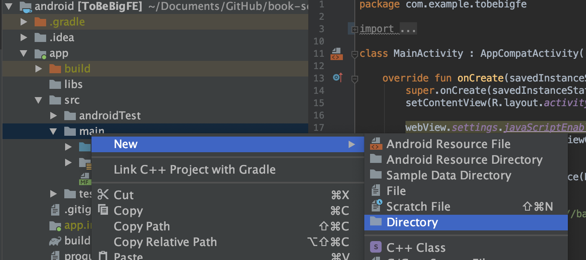
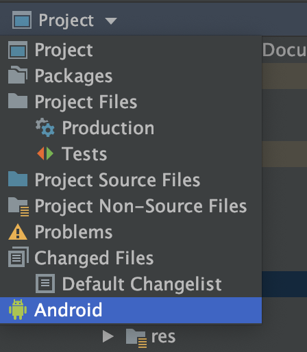
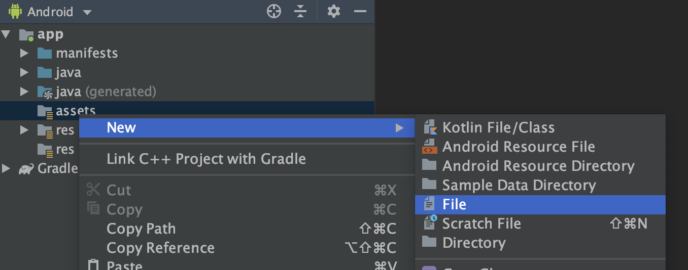
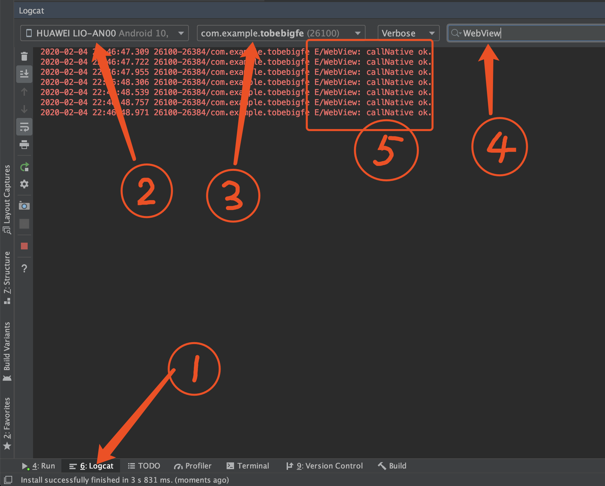

《成为大前端》2.2 Native与JS通信 - WebView添加JavascriptInterface（Android）
JS调用Native
前面我们讲过，WebView启动时，就向JS预置了一些方法，比如：
1 | window.someAndroidObj.someFunc("hello world") |
上面预置了名叫someAndroidObj的对象，someAndroidObj包含一个方法someFunc
那么如何实现呢
WebView添加JavascriptInterface
1 | class MainActivity : AppCompatActivity() { |
js端调用：
1 | window.androidBridge.callNative() |
创建自己的网页
在写完以上代码后，我们需要测试代码运行情况。但是我们加载的是baidu.com，没发运行我们的js代码，
因此我们需要自己的网页。
我们有两种方式：
- 起一个临时的服务器，比如：http://localhost:8080/test.html
- 直接将网页写到android项目中
为方便理解android加载项目中的网页，我们采用第2中方式
创建html文件
首先，切换到Project结构:

新建assets目录，右键app/src/main文件夹，如图：

切回去Android结构，这部只是为了方便，因为Android结构目录层次没有这么深：

右键app/assets，新建文件，如图：

输入名字test.html，如何OK，创建好后，输入以下代码：
1 |
|
最后，MainActivity中的加载百度的地址改为：
1 | // 加载assets中的网页 |
运行看效果
运行前了解一下Android Studio的Logcat, Logcat会连接你的Android设备，输出log，好比Chrome的Console面板。

说明：
- 选中后打开Logcat面板
- 选中运行App的设备
- 选中运行的App
- 过滤出想要的log
- 输出的log
运行后，多点几次按钮就会得到第5步的输出，说明你已经完成了JS调用Native。